Fotografia autoral
Escrevendo com a luz
Um olhar único sobre muitos mundos.
A fotografia é muito mais do que a escrita da luz. Ela é arte, é verdade, é ilusão, é uma história contada por imagens, é sensualidade, é expressão, é paixão. Ela é a expressão artística mais perfeita para registrar momentos. Atrás de cada imagem tem uma história, um sentimento, uma lágrima, um sorriso. A fotografia nos permite compartilhar a nossa visão do mundo com o nosso semelhante.
Coleção · 2015
São Paulo em Camadas
Esta série é um recorte afetivo de uma cidade que não cabe inteira em nenhuma imagem. Entre concreto, gente, história e movimento, São Paulo se revela em camadas — uma de cada vez. Esta coleção termina, mas São Paulo continua, infinita, fora do quadro. Ficam as imagens, as histórias e o desejo de seguir descobrindo novas camadas da cidade.
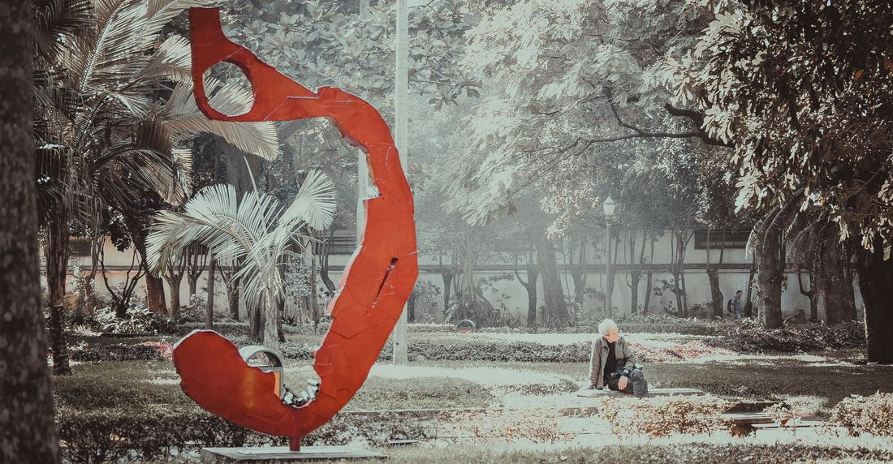
Silêncio em Vermelho Sobre o VerdeSão Paulo em Camadas · 2015
Silêncio em Vermelho Sobre o Verde
Há dias em que a cidade fala baixo.
No meio do parque, uma escultura vermelha risca o ar como se desenhasse um pensamento.
À sua frente, um senhor repousa o corpo na grama e deixa o tempo passar devagar, alheio ao trânsito e aos relógios.
Entre o metal intenso e o verde gasto das árvores, São Paulo sussurra que também sabe ser pausa – mesmo quando tudo ao redor insiste em continuar.Descrição da imagem
Fotografia em formato horizontal de um parque arborizado em São Paulo. No lado esquerdo, em primeiro plano, há uma grande escultura abstrata em metal vermelho, curva e alongada, instalada sobre uma base de concreto no meio do jardim. Ao fundo, muitas árvores altas e folhagens claras ocupam quase todo o enquadramento. No lado direito da imagem, um senhor de cabelos grisalhos está sentado sozinho sobre um banco baixo de concreto, com o corpo levemente inclinado e expressão serena, cercado pelo gramado e pela vegetação. A luz é suave, criando um clima calmo e contemplativo.
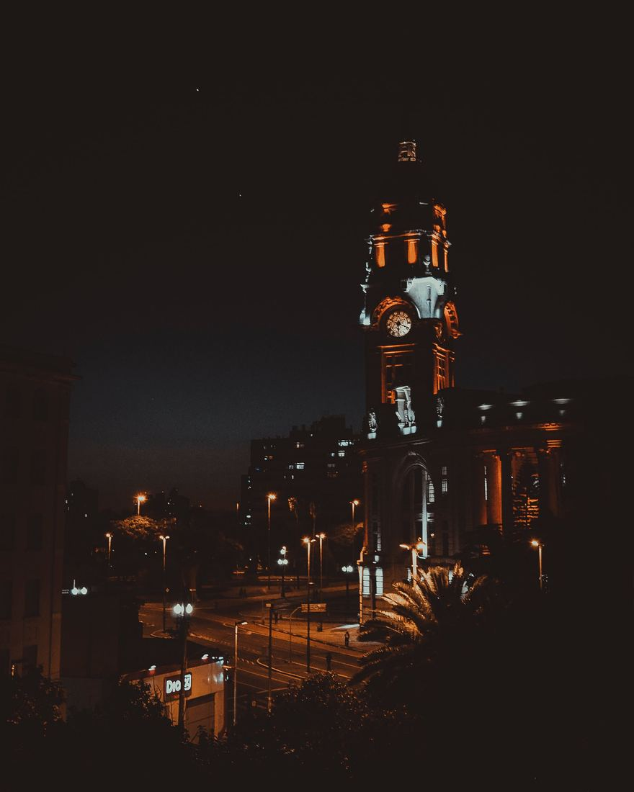
Entre Luzes e Silêncios da NoiteSão Paulo em Camadas · 2015
Entre Luzes e Silêncios da Noite
Quando a cidade desacelera, outras luzes começam a aparecer.
A torre iluminada recorta o céu como um farol antigo, guardando horas que já passaram e encontros que ainda nem aconteceram.
Lá embaixo, a avenida quase vazia faz São Paulo parecer um segredo contado em voz baixa.
Entre o laranja dos postes e o azul da noite, a metrópole troca o ruído pelo sussurro – e, por um instante, é possível ouvir o tempo passar.Descrição da imagem
Fotografia vertical de uma cena noturna em São Paulo. À direita, uma torre alta de arquitetura histórica aparece iluminada por luzes alaranjadas e brancas, destacando colunas, relógio e detalhes da fachada. Abaixo dela, parte do prédio principal também está aceso, com grandes arcos visíveis. À esquerda e ao fundo, surgem silhuetas de prédios escuros com poucas janelas claras. Na parte inferior da imagem, uma avenida quase vazia se estende com postes de luz amarelada, poucas árvores e raras figuras humanas ao longe, criando um clima de calma e silêncio na cidade.
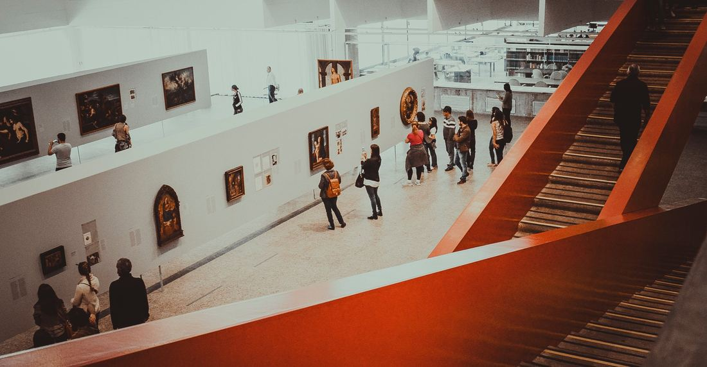
Escadas, Quadros e Corpos em MovimentoSão Paulo em Camadas · 2015
Escadas, Quadros e Corpos em Movimento
No vão do museu, a cidade aprende a falar mais baixo.
As pessoas sobem, descem, param diante dos quadros, como se cada passo também fosse uma pequena exposição.
A escada vermelha corta o espaço como um raio de cor, guiando o olhar entre obras antigas e vidas tão contemporâneas.
Entre o silêncio das telas e o murmúrio do público, São Paulo revela que também é feita de pausas longas e caminhos internos que quase ninguém vê.Descrição da imagem
Fotografia horizontal do interior de um museu em São Paulo, vista de um ponto mais alto. À direita, uma grande escada vermelha em diagonal ocupa boa parte do quadro, com degraus de madeira e algumas pessoas subindo ou descendo. À esquerda, um longo painel branco exibe diversos quadros e obras de arte, diante dos quais várias pessoas caminham, observam ou fotografam as peças. O chão é claro e o ambiente é banhado por luz difusa que entra por amplas janelas ao fundo, revelando também uma área de café ou convivência. A cena combina arquitetura moderna, movimento de visitantes e contemplação artística em um mesmo espaço.
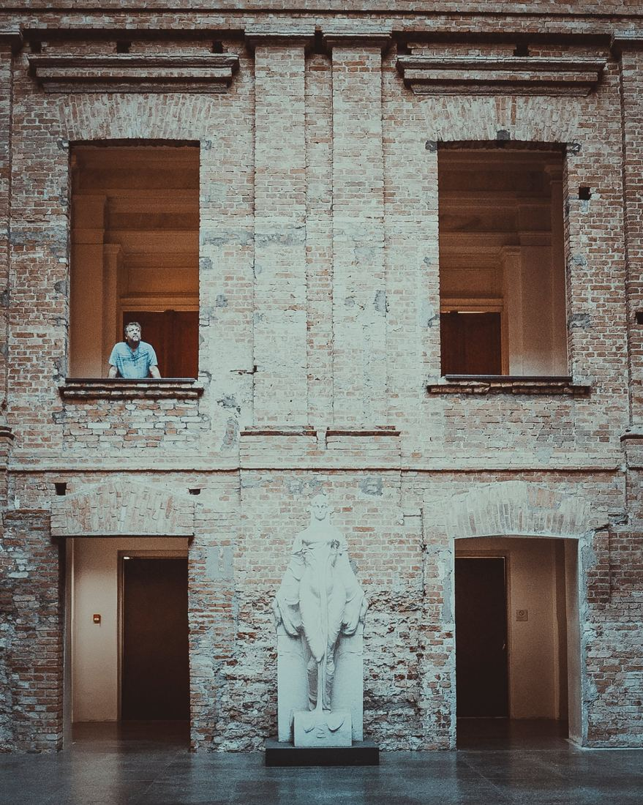
Entre a Imponência e a SerenidadeSão Paulo em Camadas · 2015
Entre a Imponência e a Serenidade
Às vezes, a cidade nos observa de volta.
Do alto da janela, um homem se apoia no parapeito enquanto, lá embaixo, uma figura esculpida imponente guarda o centro do salão em silêncio absoluto.
Entre o corpo vivo e o corpo de pedra, o tijolo exposto revela camadas de uma São Paulo que já foi outra, mas insiste em permanecer nas paredes.
No encontro entre o olhar humano e a arquitetura antiga, o tempo parece suspenso, como se o prédio respirasse junto com quem o atravessa.Descrição da imagem
Fotografia vertical do interior de um prédio antigo de tijolos aparentes. No centro inferior da imagem, há uma escultura branca de corpo inteiro sobre um pedestal escuro, representando uma figura humana estilizada, com longas vestes e braços estendidos ao lado do corpo. Atrás da escultura, a parede de tijolos exibe marcas de desgaste e remendos. À esquerda e à direita da estátua, duas portas retangulares levam a corredores internos iluminados. Na parte superior, duas grandes janelas sem vidro se abrem para um pavimento alto; na janela da esquerda, um homem de barba, usando camisa azul-clara, apoia os braços no parapeito e olha para a frente. A cena enfatiza a relação entre arquitetura histórica, arte e presença humana em um espaço cultural de São Paulo.
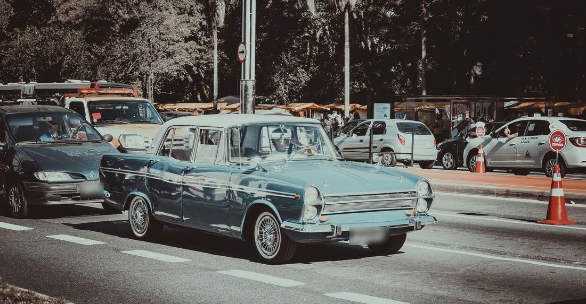
Quando o Antigo Atravessa o PresenteSão Paulo em Camadas · 2015
Quando o Antigo Atravessa o Presente
Às vezes, no meio do trânsito apressado, é o passado que reduz a marcha da cidade.
Entre carros prateados, placas novas e cones laranja, esse azul antigo desliza como quem lembra que já existia avenida muito antes da pressa virar rotina.
O brilho do cromado, o desenho das linhas, o silêncio de um motor que sobreviveu ao tempo parecem perguntar se tudo o que é novo precisa mesmo substituir o que veio antes.
Na contramão da obsolescência, esse carro antigo não é só veículo: é memória em movimento, insistindo em ocupar um espaço que o futuro costuma tomar à força.Descrição da imagem
Fotografia horizontal de uma avenida movimentada em São Paulo, em plena luz do dia. Em destaque, no centro da imagem, um carro antigo azul-claro, bem conservado, com detalhes cromados e rodas com calotas trabalhadas, trafega na faixa da esquerda. O motorista, de camisa clara, aparece ao volante. À esquerda, outros carros mais modernos formam uma pequena fila, enquanto à direita há mais veículos, cones laranja delimitando a ciclovia e placas de trânsito indicando ciclofaixa. Ao fundo, vê-se uma fileira de barracas amarelas de feira ou comércio de rua, árvores altas fazendo sombra e algumas pessoas circulando na calçada. A cena contrapõe a elegância nostálgica do automóvel antigo ao cenário urbano contemporâneo e funcional.
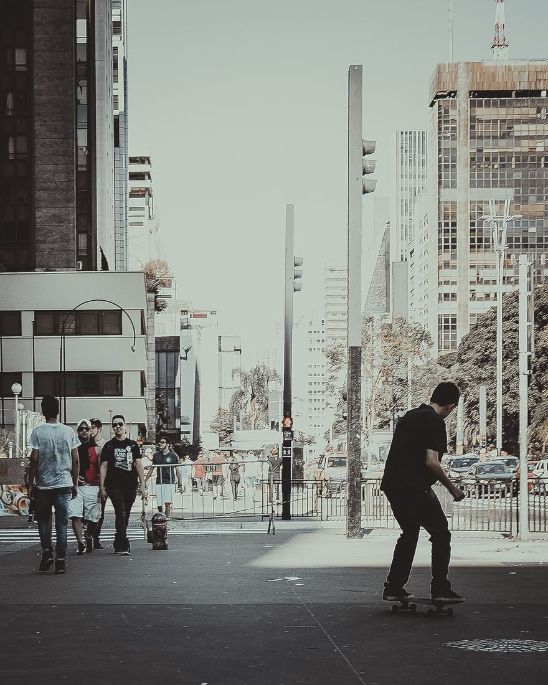
Liberdade Sobre Quatro RodinhasSão Paulo em Camadas · 2015
Liberdade Sobre Quatro Rodinhas
No meio da imensidão de concreto, alguém escolhe não andar em linha reta.
Entre prédios, grades, semáforos e calçadas desenhadas para a pressa, o skatista inventa outra forma de existir na cidade, escorregando pelas brechas que o asfalto ainda permite.
Cada curva, cada impulso do corpo, cada risco invisível que as rodas desenham no chão é uma pequena declaração de liberdade em pleno centro da metrópole.
Enquanto o concreto se repete em blocos e janelas, o movimento dele lembra que a cidade também é palco para quem insiste em transformar trajeto em expressão.Descrição da imagem
Fotografia vertical de uma calçada ampla na região da Avenida Paulista, em São Paulo. Em primeiro plano, à direita, um jovem de camiseta escura e calça jeans anda de skate, ligeiramente inclinado para frente, como se estivesse iniciando uma manobra ou ganhando impulso. À esquerda, algumas pessoas caminham em direção ao fundo da avenida, incluindo um grupo de três homens e uma pessoa conduzindo um cachorro pequeno. Mais ao fundo, a rua está cheia de pedestres e carros, cercados por prédios altos de vidro, concreto e metal, postes de semáforo e estruturas urbanas. A luz clara do dia recorta áreas de sombra e claridade no chão, reforçando a sensação de cidade grande e de um único corpo em movimento livre em meio à rigidez do cenário.
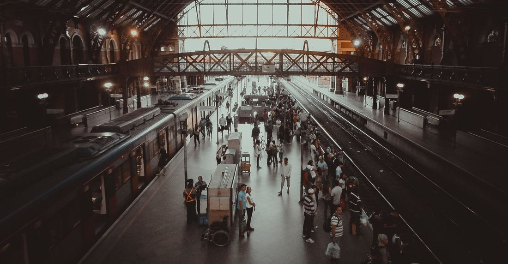
O Pulmão Que Move a CidadeSão Paulo em Camadas · 2015
O Pulmão Que Move a Cidade
De cima, a estação parece um grande organismo respirando gente.
Os trilhos, como veias de aço, distribuem corpos apressados enquanto o prédio antigo observa, paciente, mais um dia de idas e vindas.
Entre luzes amareladas, ecos de passos e anúncios distorcidos no alto-falante, cada pessoa ali carrega um destino que a arquitetura não conhece, mas acolhe.
No coração desse vão de ferro e vidro, São Paulo revela sua rotina mais crua: uma coreografia infinita de encontros breves e partidas silenciosas.Descrição da imagem
Fotografia horizontal da Estação da Luz vista de um ponto elevado, mostrando toda a plataforma central. À esquerda, um trem parado ocupa quase toda a extensão da imagem, com algumas portas abertas e passageiros entrando ou saindo. No centro, uma grande quantidade de pessoas se distribui pelo piso, caminhando em direções diferentes, formando pequenos grupos e filas junto às escadas de acesso. À direita, os trilhos seguem em perspectiva até o fundo, ladeados por plataformas mais vazias. A cobertura metálica arqueada, com estrutura de ferro e claraboias, domina a parte superior da foto, atravessada por uma passarela também de ferro. A luz que entra ao fundo cria um contraste entre o interior mais escuro e o brilho suave da área externa, reforçando a sensação de movimento constante em um espaço histórico.
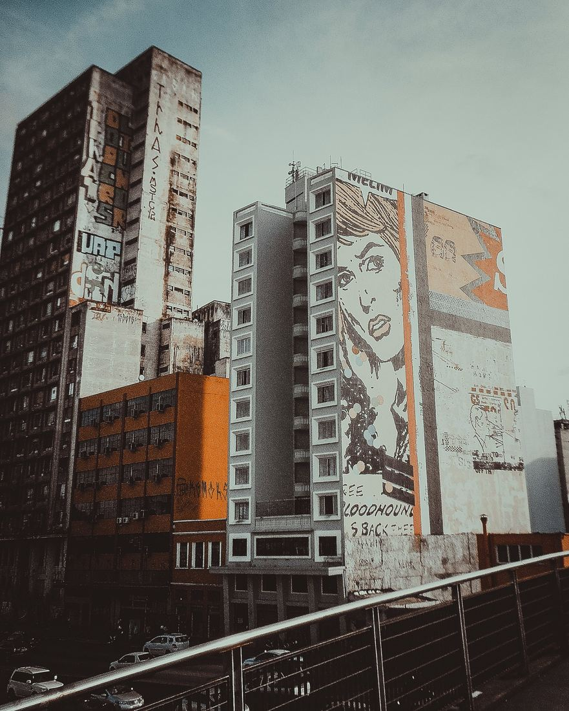
A Cidade Que Nunca Cabe Inteira no QuadroSão Paulo em Camadas · 2015
A Cidade Que Nunca Cabe Inteira no Quadro
Entre prédios gastos, fachadas reformadas e murais gigantes que gritam cor em meio ao cinza, São Paulo segue impossível de ser contida.
Essa parede pintada, com olhar pop e expressão enigmática, é só um fragmento de uma cidade que se reinventa a cada esquina, misturando ruína, grafite, propaganda, memória e desejo.
Por mais que se tente emoldurá-la, sabe que nenhuma sequência de fotos dá conta de tudo o que ela é: seriam precisos anos, vidas diferentes e muitos outros olhares para traduzir o que pulsa nesses vãos, nesses carros apressados, nesses prédios que insistem em tocar o céu.
Encerrar esta coleção não é concluir São Paulo, é apenas aceitar que toda tentativa de retratá-la é um recorte afetivo de um lugar tão vasto quanto as histórias que o habitam.Descrição da imagem
Fotografia vertical de um conjunto de prédios no centro de São Paulo, vista a partir de uma passarela elevada com guarda-corpo metálico em primeiro plano. À direita, um edifício com grande painel em estilo pop art ocupa boa parte da fachada: o rosto de uma mulher em traços grossos, com fundo laranja e detalhes gráficos. Ao lado, um prédio estreito, em tons claros e janelas alinhadas, parece recém-reformado, contrastando com as construções vizinhas mais antigas e desgastadas. À esquerda, ergue-se uma torre alta e escura, com paredes marcadas pelo tempo e grandes inscrições verticais e grafites. Na base dos edifícios, veem-se carros pequenos circulando na avenida, reforçando a escala monumental da arquitetura. O céu claro, levemente esbranquiçado, enquadra a cena e acentua o contraste entre o concreto envelhecido e as cores vibrantes do mural.


Coleção · 2019
Pequenas Formas de Vida
O olhar se aproxima para encontrar mundos que quase sempre passam despercebidos. Entre insetos, flores, sementes e teias, cada imagem revela a delicadeza e a força da vida em seus menores detalhes. Esta coleção termina, mas a vida pequena continua ao nosso redor, silenciosa e abundante. Ficam os detalhes, as cores e o convite para olhar com mais atenção para aquilo que, mesmo miúdo, torna o mundo imenso.
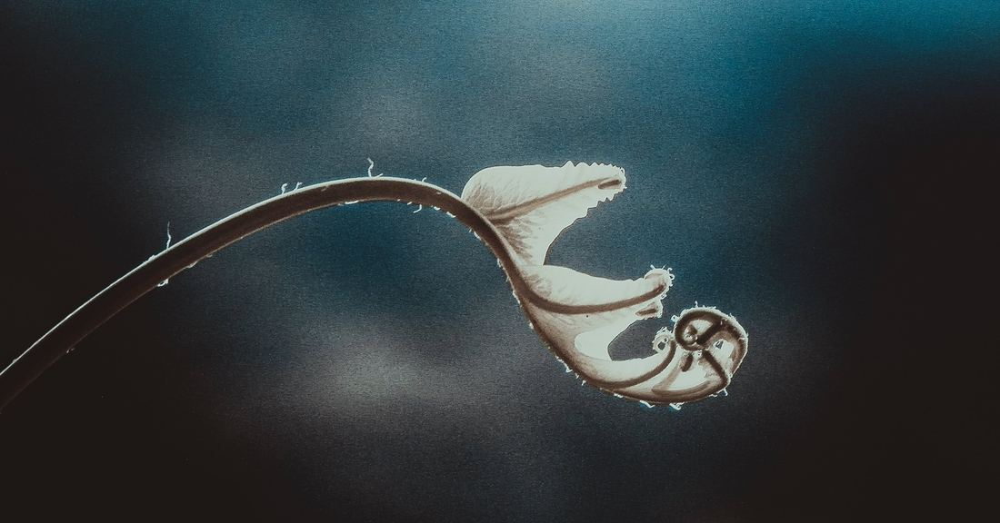
O Primeiro Gesto do UniversoPequenas Formas de Vida · 2019
O Primeiro Gesto do Universo
Na curva lenta desse broto, parece que o universo ensaia seu primeiro movimento.
O caule se dobra em arco, atravessando o escuro como uma linha de tempo, até desembocar nessa pequena criatura vegetal que se abre em garras suaves, bordas serrilhadas, dentes de luz.
Na ponta, um caracol de folha ainda enroscado guarda o futuro em espiral, como se a planta estivesse respirando fundo antes de nascer por inteiro.
Em O Primeiro Gesto do Universo, cada recorte, cada pelinho iluminado na borda, conta a história de uma vida que ainda nem começou direito, mas já ocupa o centro do palco com a coragem de quem brota no abismo e se oferece ao desconhecido.Descrição da imagem
Fotografia horizontal, em formato panorâmico, mostrando o close de um único broto de planta contra um fundo escuro e desfocado em tons de azul-petroléo e preto. O broto nasce da borda esquerda do quadro como um caule fino, levemente espesso, que se curva para cima e depois desce, formando um grande arco. Perto da extremidade direita, esse arco se transforma em uma estrutura que lembra uma pequena criatura: duas “mandíbulas” vegetais abertas, voltadas para a direita, com bordas serrilhadas e irregulares, iluminadas por uma luz suave que desenha um contorno claro ao redor. Essas bordas têm pequenos pelinhos e rebarbas que brilham contra o fundo escuro. Logo abaixo dessas “mandíbulas”, a ponta do broto termina em uma espiral apertada, como um caracol vegetal, enrolado sobre si mesmo. Todo o broto tem um tom claro, quase bege, que contrasta com o fundo azul e preto, criando a sensação de que ele está flutuando no vazio. Não há outras plantas, flores ou elementos nítidos: apenas essa única linha curva, delicada e bem definida, recortando o fundo sombrio como um desenho minimalista de vida nascente.
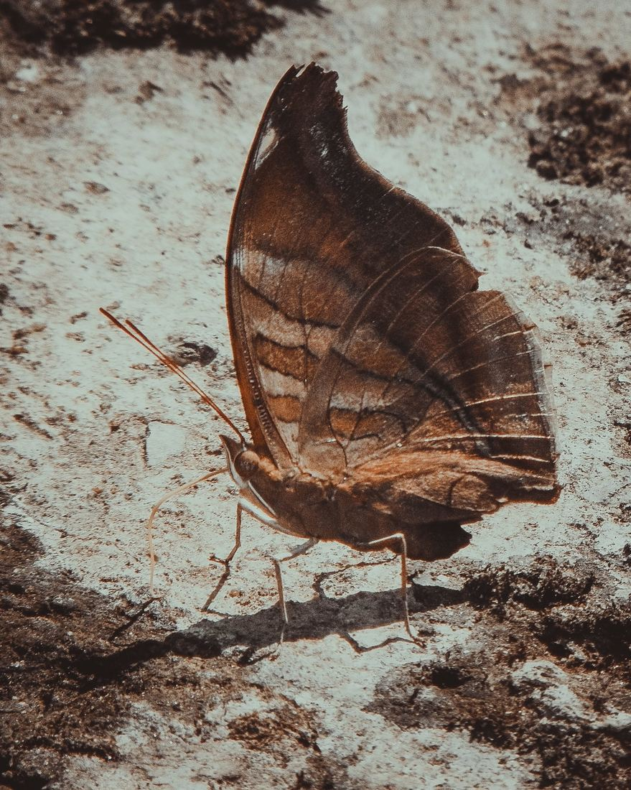
A Sombra Que Aprende a VoarPequenas Formas de Vida · 2019
A Sombra Que Aprende a Voar
Sobre a pele áspera da terra, essa borboleta parece mais sombra do que bicho.
Erguida em posição de descanso, asa única à mostra, ela se desenha como uma vela marrom contra o chão claro: linhas curvas, veias finas, rasgos discretos na borda, tudo lembrando um pedaço de noite em pé sob o sol.
Os tons de cobre, ferrugem e ocre se misturam ao relevo da pedra, numa camuflagem tão perfeita que é preciso um segundo olhar para perceber que ali há vida — patas finas apoiadas com delicadeza, antenas alongadas investigando o ar, corpo quieto como se escutasse o mundo de perto.
Em A Sombra Que Aprende a Voar, a borboleta é um intervalo entre o voo e o chão: um instante em que a leveza se deixa pesar, antes de voltar a riscar o céu como quem se despe da pedra e devolve movimento ao que parecia imóvel.Descrição da imagem
Fotografia vertical em close mostrando uma borboleta marrom pousada sobre uma superfície de pedra clara. A borboleta está vista de lado, com as asas fechadas na posição de descanso, o que faz parecer que há apenas uma asa alta, fina e comprida, como uma lâmina vertical. Essa asa ocupa quase toda a metade direita da imagem, subindo da altura do chão até perto do topo do quadro. A cor predominante é um marrom quente, puxado para cobre e ferrugem, com faixas e manchas em tons mais claros de bege e creme, formando listras horizontais suaves e alguns desenhos curvos que lembram nervuras e mapas. A borda da asa é irregular, com pequenos rasgos e desgastes, principalmente na parte superior.
O corpo da borboleta fica na parte inferior central, pequeno em relação à asa. Ele é marrom e robusto, com patas finas e longas, também claras, apoiadas firmemente no chão pedregoso. As antenas são bem visíveis, estendidas para a frente, finas e compridas, em um tom claro que contrasta levemente com o fundo. A cabeça aparece de perfil, com um olho arredondado destacado.
O chão onde ela está pousada é uma mistura de pedra clara e terra escura. A superfície tem textura áspera, com áreas quase brancas, outras em cinza e marrom, e pequenas rachaduras, buracos e manchas de sombra. À esquerda e na base da imagem, surgem áreas mais escuras, indicando acúmulo de terra ou umidade, criando contraste com as zonas mais claras onde a borboleta se destaca. O tratamento da foto puxa as cores para uma paleta quente e ligeiramente envelhecida, reforçando a sensação de calor e de luz forte batendo na pedra. Não há outros animais nem elementos humanos; toda a atenção recai sobre essa borboleta marrom, erguida como uma pequena sombra vertical sobre o chão claro.
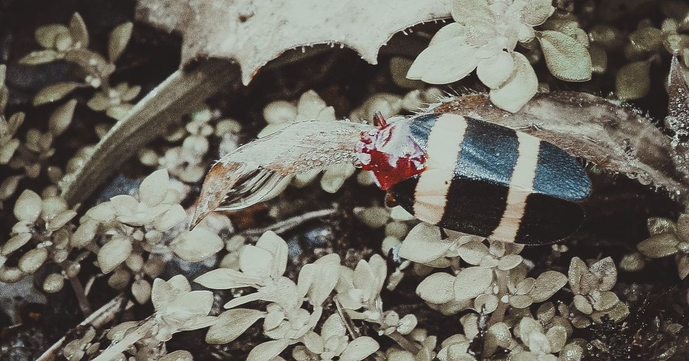
Farol em Preto, Vermelho e OuroPequenas Formas de Vida · 2019
Farol em Preto, Vermelho e Ouro
Deitada na altura do chão, essa pequena criatura parece um farol em miniatura, aceso para quem souber olhar para baixo.
O corpo listrado em preto profundo, amarelo gasto e um vermelho que atravessa o filtro como brasa coberta de cinza transforma o inseto numa bandeira viva, estendida sobre um mar de folhas miúdas.
A cabeça vermelha, intensa, contrasta com o ambiente dessaturado, como se fosse o núcleo de um alarme silencioso; as faixas amarelas quebram o escuro, enquanto o preto segura o peso da cena, lembrando que nem toda cor grita — algumas apenas insistem em existir, mesmo filtradas pela memória.
Em Farol em Preto, Vermelho e Ouro, o que poderia ser só mais um bicho no mato vira sinal: um pequeno corpo avisando, com suas cores adaptadas ao tom sépia do mundo, que há vida vibrando mesmo quando o filtro tenta dizer o contrário.Descrição da imagem
Fotografia horizontal em close mostrando um inseto de corpo oval e listrado sobre o chão coberto por pequenas plantas. O bicho está disposto na diagonal, da metade direita em direção ao centro esquerdo da imagem. O dorso é dividido em faixas horizontais bem definidas: uma faixa preta, depois uma faixa amarela clara, outra faixa preta e outra amarela, com o filtro dando a essas cores um tom ligeiramente envelhecido, como se fossem vermelho-escuro queimado e amarelo ouro antigo. A cabeça é pequena e marcante, num vermelho intenso e brilhante, com aspecto úmido, destacando-se fortemente em meio aos tons mais apagados ao redor. Da região da cabeça sai um prolongamento fino e translúcido, curvado, que parece uma mistura de folha rasgada com pele delicada, também afetado pelo filtro e puxado para tons amarelados e avermelhados.
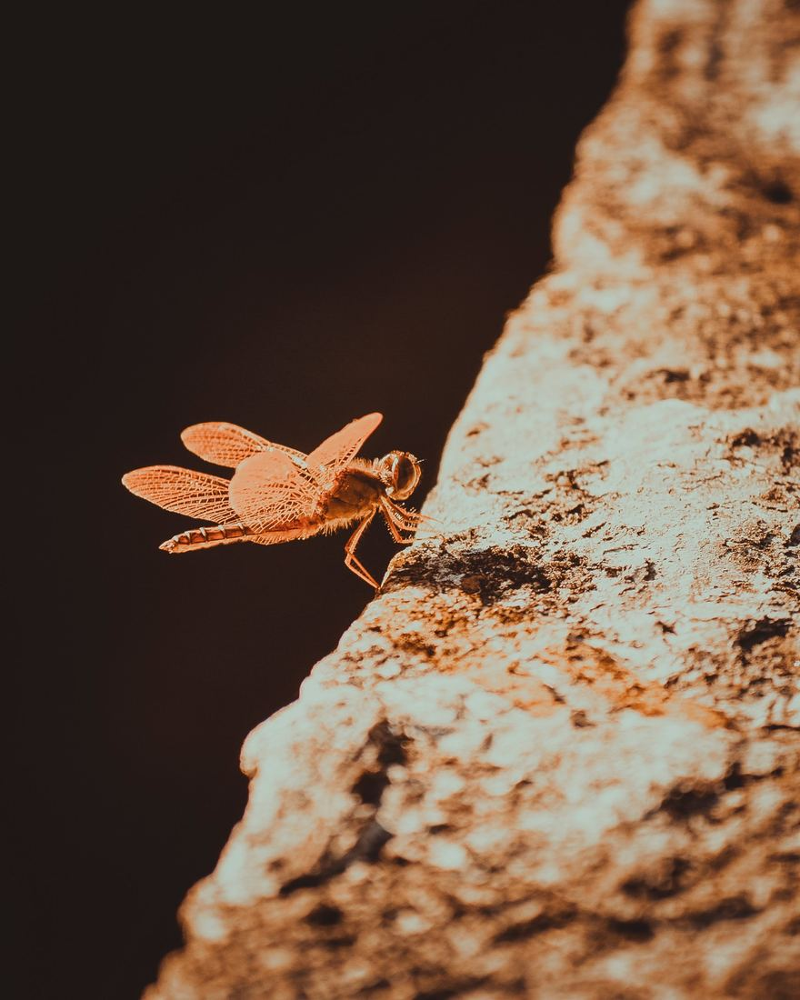
Entre a Pedra e o VooPequenas Formas de Vida · 2019
Entre a Pedra e o Voo
Na borda da pedra, uma libélula repousa como se tivesse encontrado, por um instante, o ponto exato entre partir e permanecer. Suas asas delicadas, desenhadas por veios finos, se abrem contra o vazio escuro; o corpo alongado acompanha a rocha, enquanto a luz aquece suas formas em tons de cobre.
Em Entre a Pedra e o Voo, a quietude não é ausência de movimento: é apenas uma breve pausa, suspensa entre a firmeza da rocha e a leveza de quem nasceu para atravessar o ar.Descrição da imagem
Fotografia vertical de uma libélula pousada na borda de uma superfície rochosa clara e irregular. O inseto aparece de perfil, na região central esquerda da imagem, com a cabeça voltada para a direita e as patas apoiadas na pedra. Seu corpo é fino e alongado, em tons de marrom e cobre. As quatro asas transparentes estão abertas para trás e para os lados; seus veios delicados formam uma trama visível, realçada pela luz quente. A libélula tem olhos arredondados e escuros, e pequenas cerdas podem ser percebidas ao redor do corpo. A rocha ocupa o lado direito e a parte inferior da fotografia, com textura áspera, relevos e manchas em tons de bege, creme e marrom. À esquerda, há um fundo quase preto, que cria contraste com o inseto e a pedra iluminados.
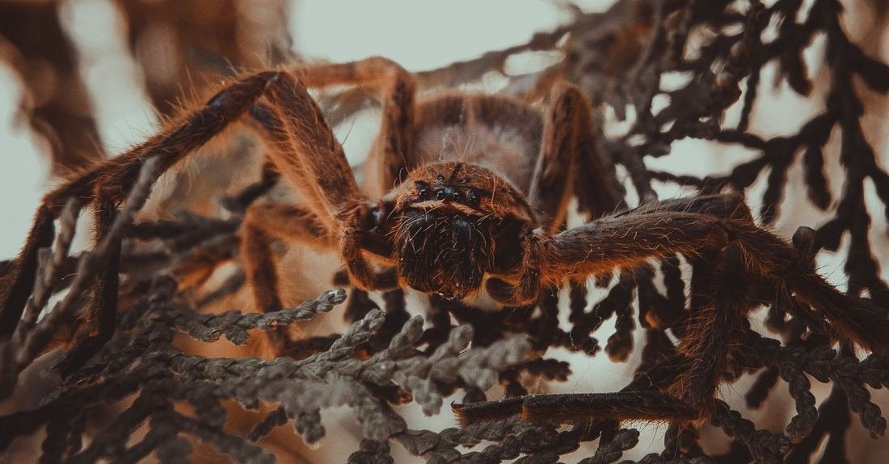
A Guardiã do Entre RamosPequenas Formas de Vida · 2019
A Guardiã do Entre Ramos
No emaranhado de galhos secos, um rosto peludo e silencioso vigia o mundo em outra escala.
As patas longas se esticam como pontes enferrujadas, ocupando o quadro inteiro, enquanto o corpo em tons de cobre e sombra se confunde com a própria vegetação — é difícil saber onde termina o galho e começa a aranha.
Os olhos minúsculos, negros e brilhantes, formam um constelado atento no centro da cabeça, cercados por pelos que lembram uma barba antiga, densa, quase humana.
Em A Guardiã do Entre Ramos, o detalhe vira encontro com o desconhecido: não é um monstro nem um vilão, mas uma presença firme, que nos lembra que o mesmo lugar que nos abriga também é casa de outras vidas, invisíveis até que a lente se ajoelhe na altura delas.Descrição da imagem
Fotografia horizontal, em formato panorâmico, mostrando em close extremo uma aranha grande e peluda entre ramos de planta seca. A aranha ocupa quase toda a largura da imagem. O enquadramento é frontal: vemos a cabeça e a parte anterior do corpo no centro, com as patas estendidas para os lados, avançando em direção às bordas do quadro. As pernas são longas, grossas e cobertas de pelos, em tons de marrom e ferrugem, lembrando pequenos galhos aveludados; elas se abrem como um arco, criando a sensação de que a aranha está abraçando a cena.
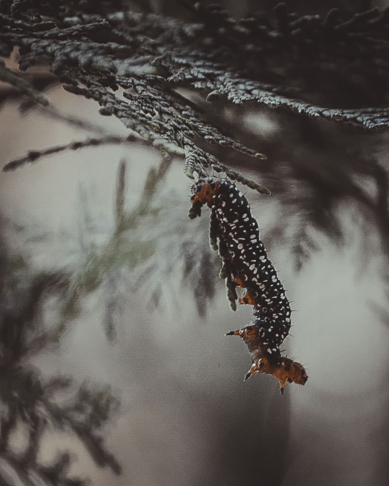
A Travessia SuspensaPequenas Formas de Vida · 2019
A Travessia Suspensa
De cabeça para baixo, agarrada ao galho, uma pequena lagarta parece atravessar o silêncio. Seu corpo escuro, salpicado de pontos claros, contrasta com os detalhes alaranjados que acendem a penumbra. Abaixo, o fundo desfocado se abre como um espaço imenso — mas ela segue firme, presa ao seu caminho, entre a sombra dos ramos e a promessa de transformação.
Em A Travessia Suspensa, cada marca parece guardar um sinal de vida: um passo minúsculo, uma pausa delicada, o começo de algo que ainda está por vir.
Descrição da imagem
Fotografia vertical de uma lagarta pendurada de cabeça para baixo em um galho que atravessa a parte superior da imagem. O corpo comprido e curvado está voltado para baixo e tem coloração predominantemente escura, com muitos pequenos pontos e marcas claras. Há áreas alaranjadas na cabeça e em outras partes do corpo, criando contraste com o tom escuro. A lagarta está presa à parte inferior do galho, cujas superfícies são ásperas e cobertas por pequenas estruturas que lembram folhas ou escamas. O fundo está desfocado, em tons claros de cinza e bege, com sombras suaves de vegetação. No canto inferior esquerdo, aparecem formas escuras e indistintas de plantas. A lagarta é o elemento mais nítido e se destaca contra o fundo suave.
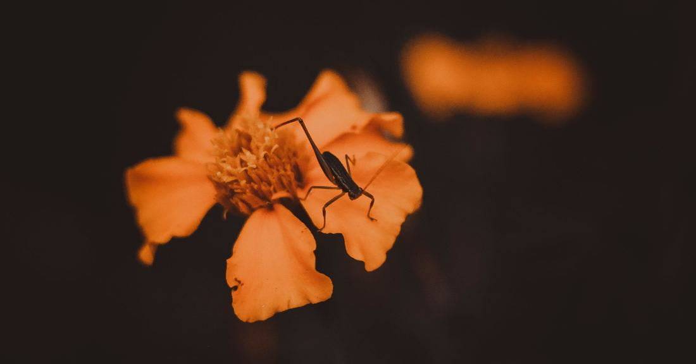
Equilibrista de PólenPequenas Formas de Vida · 2019
Equilibrista de Pólen
No meio da escuridão, uma flor acende um palco de luz quente e, sobre ela, um pequeno corpo ensaia o próprio milagre do equilíbrio.
As pétalas laranja se abrem como um círculo de holofotes, gastas nas bordas, delicadas e imperfeitas, enquanto o inseto de pernas finas caminha na beira do abismo, preso apenas aos fios longos que parecem desenhar no ar uma coreografia silenciosa.
O centro da flor é um miolo denso, cheio de textura, uma nuvem de pólen onde a vida se multiplica sem alarde; ali, o “equilibrista” apoia seu corpo escuro e delicado, dividindo o mesmo chão que sustenta o brilho e o desbotado, o início e o fim.
Em Equilibrista de Pólen, o instante é esse: a natureza em miniatura caminhando sobre uma única pétala, lembrando que, às vezes, todo o nosso mundo cabe na borda de uma flor.Descrição da imagem
Fotografia horizontal em formato panorâmico, com fundo muito escuro, quase preto, destacando uma única flor laranja no centro-esquerda da imagem. A flor é vista de cima e um pouco de lado. Possui algumas pétalas largas e irregulares, de bordas levemente onduladas e gastas, com pequenos defeitos e rasgos, em um tom de laranja forte e quente que se sobressai contra o fundo sombrio. No centro da flor há um miolo arredondado, volumoso, cheio de pequenas estruturas vegetais, lembrando um aglomerado de filamentos curtos em tom laranja mais intenso.
Sobre a flor, especialmente entre o miolo e a pétala voltada para a parte inferior da imagem, está um inseto pequeno e fino. O corpo dele é comprido e escuro, em um tom quase preto, com brilho discreto. Ele possui pernas muito longas e delicadas, também escuras, parecidas com fios rígidos, que se apoiam sobre a superfície da pétala e no miolo, dando a sensação de que o bicho está se equilibrando cuidadosamente. Duas antenas finas se projetam para frente, quase se confundindo com as pernas pela finura e pela cor.
O resto da imagem está todo desfocado: o fundo é um mar de sombra em marrom e preto, com apenas um borrão alaranjado no canto superior direito que sugere outra flor distante, mas sem forma definida. Não há presença humana nem outros animais visíveis com nitidez; o olhar é conduzido totalmente para o contraste entre a flor laranja iluminada e o inseto escuro, delicadamente apoiado sobre ela.
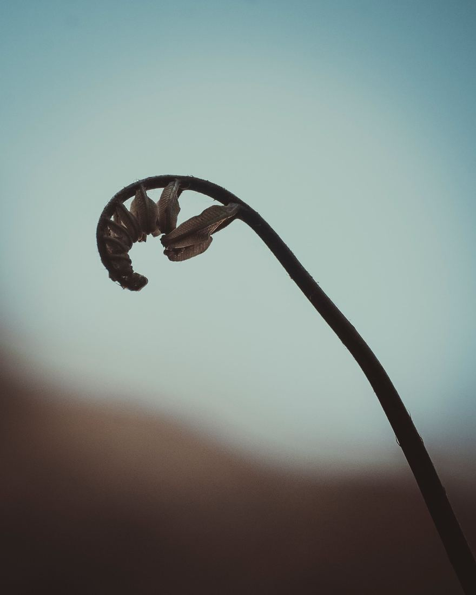
O Último Suspiro Antes de DesabrocharPequenas Formas de Vida · 2019
O Último Suspiro Antes de Desabrochar
Curvada contra o céu, uma folha ainda recolhida guarda em seu silêncio a promessa de se abrir. Seus pequenos folíolos permanecem dobrados, protegidos no abraço do caule, enquanto a haste desenha um arco delicado entre a sombra e a luz.
Há algo de pausa nessa forma: como se a natureza respirasse fundo antes de revelar o que traz por dentro. E é com essa imagem de começo — discreta, paciente, cheia de possibilidade — que Pequenas Formas de Vida chega ao fim. A coleção se encerra, mas a vida continua se desenrolando, folha por folha, fora do enquadramento.
Descrição da imagem
Fotografia vertical de uma haste escura e fina que sobe da parte inferior direita e se curva em arco para a esquerda, terminando em uma folha jovem ainda enrolada. A folha fica próxima ao centro da imagem e tem pequenos folíolos fechados, sobrepostos e dobrados para dentro, formando uma silhueta delicada, semelhante a um caracol ou gancho. A luz de fundo revela discretamente a textura e as nervuras dos folíolos, em tons castanhos e avermelhados, enquanto a haste aparece quase preta. Ao fundo, há uma área ampla e desfocada em azul-esverdeado claro, que escurece em tons de marrom e cinza na parte inferior. O contraste entre a planta em silhueta e o fundo luminoso destaca a curva da haste e a folha ainda por se abrir.


Coleção · 2018
Rio de Gente
Aqui, o protagonista não é o cartão-postal, é quem caminha por ele. Esta coleção é um passeio pelo Rio que trabalha, sonha, descansa, corre, ama e joga bola na beira do mar. Um retrato afetivo da cidade através de quem dá vida a ela todos os dias. Estas fotos não dão conta de todo o Rio, mas guardam encontros reais com quem faz a cidade existir. A coleção termina, mas ficam os gestos, os olhares e a certeza de que o Rio é, antes de tudo, um rio de gente. Daqui, eu sigo buscando novos rostos, novos lugares e novas formas de contar essas histórias.
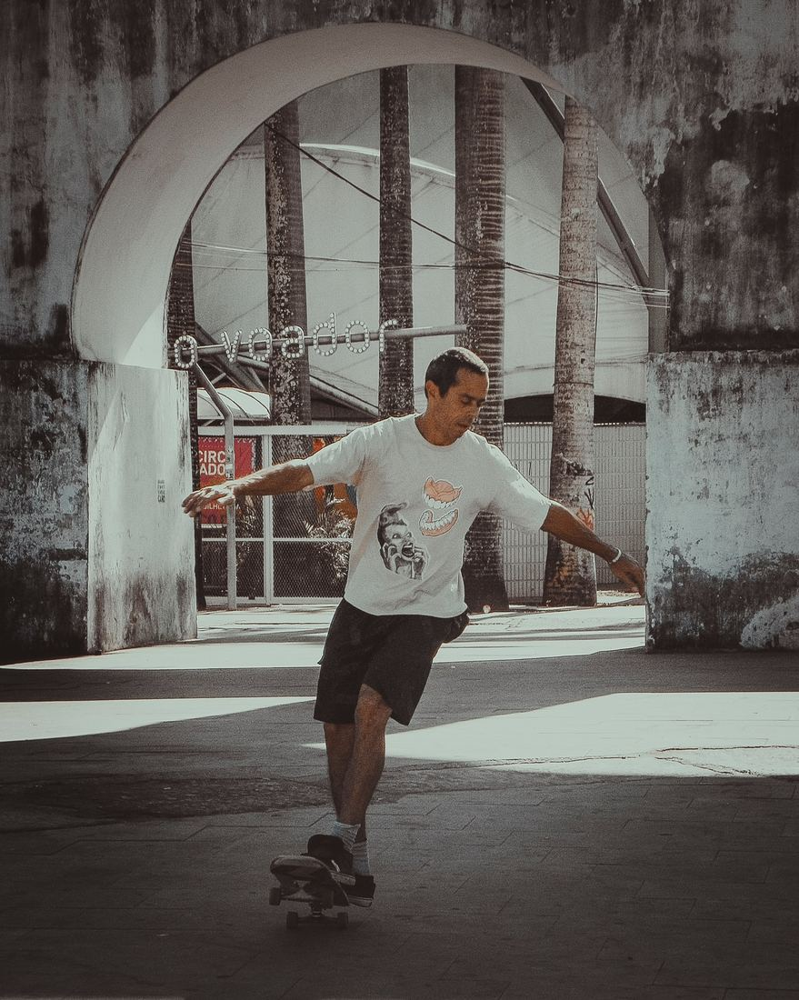
Voador por um InstanteRio de Gente · 2018
Voador por um Instante
No Rio, a cidade te convida a sonhar — e se você ousa querer voar, ela te batiza de voador.
Sob o letreiro que carrega esse nome, um skatista desliza como se o chão fosse trampolim, braços abertos como quem abraça o horizonte.
É um gesto nada mais carioca: erguer os braços, como o Cristo, como quem agradece, como quem diz que aqui, até o chão pode ser céu.
Nesse instante, ele não é só passageiro da cidade — é parte do seu movimento, da sua poesia, do seu desejo de liberdade.Descrição da imagem
Fotografia horizontal na Lapa, Rio de Janeiro. Um skatista de camiseta clara e bermuda escura faz uma manobra no pátio com os Arcos da Lapa onde se lê “VOADOR”, referência ao Circo Voador. Ele está com os braços abertos, corpo inclinado, em pleno movimento, como se estivesse prestes a voar. Ao fundo, palmeiras, postes e prédios compõem o cenário urbano sob luz forte de dia, com sombras marcadas no asfalto. A cena transmite leveza, liberdade e a energia contagiante da cidade.
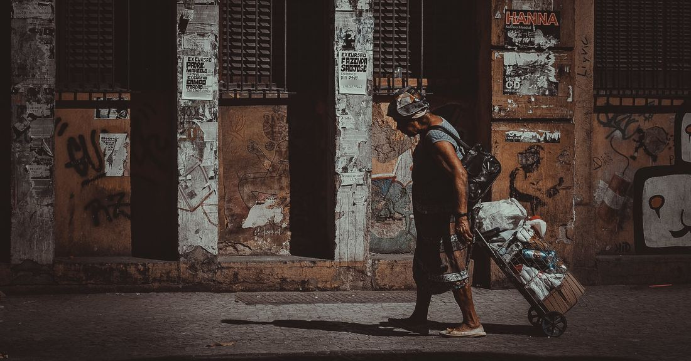
Quem Carrega o DiaRio de Gente · 2018
Quem Carrega o Dia
No meio das paredes descascadas, dos cartazes que prometem mundos e das janelas fechadas, ela puxa o próprio dia num carrinho improvisado.
A cidade passa rápido, mas o passo é curto, firme, carregando no corpo o peso de muitas manhãs iguais.
Enquanto os muros gritam anúncios, rabiscos e sonhos alheios, ela segue anônima, costurando a calçada com a rotina de quem não pode parar.
Aqui, o Rio não é paisagem: é o caminho duro de quem sustenta a própria existência na marra, um passo depois do outro.Descrição da imagem
Fotografia horizontal em rua do centro do Rio de Janeiro. Em primeiro plano, uma mulher de meia-idade caminha da esquerda para a direita, ligeiramente curvada, puxando um carrinho de feira cheio de sacolas. Ela usa saia estampada, blusa escura, chinelos e um lenço listrado na cabeça; uma mochila grande está presa ao ombro. Ao fundo, uma parede antiga, coberta de cartazes, grafites, tinta descascada e janelas gradeadas, cria um cenário urbano áspero. A luz dura do sol recorta a silhueta da mulher e projeta sua sombra longa no chão, reforçando a sensação de cansaço e persistência.
- Dois Contra o Mundo
Rio de Gente · 2018
Dois Contra o Mundo
À frente, montanha, prédios, água calma e um horizonte que parece não ter fim.
Mas o que torna essa paisagem perfeita não é só o visual: é o simples fato de serem dois, dividindo o mesmo pedaço de grama, o mesmo silêncio bom de quem não precisa dizer nada.
Ela estica as pernas e ergue o livro pro alto, ele se recolhe em pensamentos, e ainda assim tudo ali está junto — corpo, conversa muda e a magnitude do Rio abraçando os dois.Descrição da imagem
Fotografia vertical na beira da Lagoa Rodrigo de Freitas, no Rio de Janeiro. Em primeiro plano, sobre a grama, um casal está deitado em uma canga: à esquerda, uma pessoa reclinada de costas, pernas para o alto, segura um livro aberto acima do rosto; à direita, outra pessoa, sem camisa e de boné, está sentada, inclinada para a frente, com os braços apoiados nas pernas, em postura relaxada. À frente deles, a água da lagoa reflete a luz suave. Ao fundo, vê-se a faixa de prédios da cidade e, dominando a paisagem, um grande morro de formato marcante, envolto em névoa leve. A cena transmite calma, intimidade e a beleza de compartilhar um momento simples em uma paisagem exuberante.
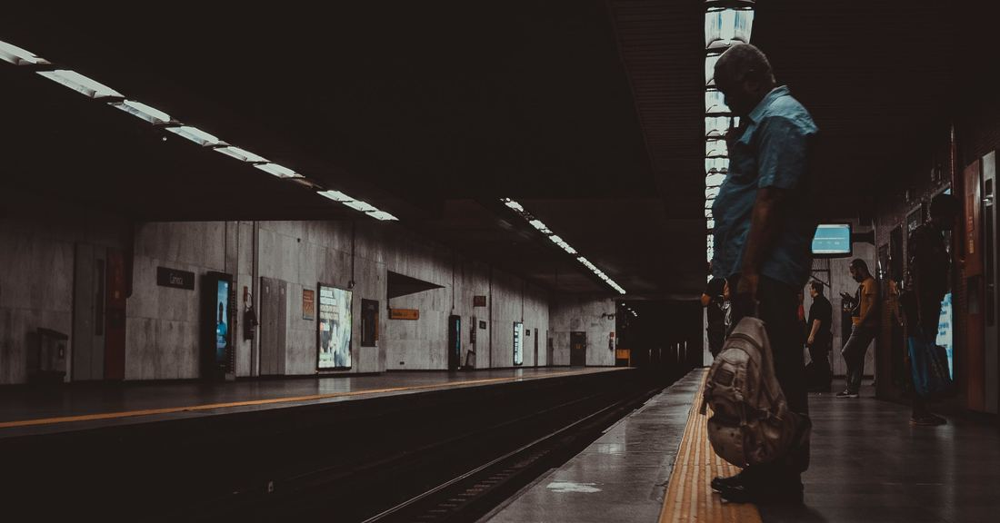
Rumo ao DescansoRio de Gente · 2018
Rumo ao Descanso
Fim de linha de um dia longo: corpo cansado, cabeça cheia, a mesma plataforma de sempre.
Entre luz fria, anúncios e concreto, ele espera o metrô com a mochila na mão, pensando no que vem depois da catraca final.
Porque a verdadeira recompensa do corre carioca não está no relógio de ponto, mas na volta pra casa — o prato quente, o banho demorado, o sofá que sabe o peso do seu cansaço.Descrição da imagem
Fotografia horizontal em uma estação de metrô, identificada pela placa “Carioca” na parede do lado esquerdo. O cenário é dominado por concreto cinza, iluminação fluorescente no teto e um longo trilho escuro ao centro. À direita, em primeiro plano, um homem de pele escura, camisa azul e calça escura está de pé na plataforma, em silhueta parcial, segurando uma mochila clara na mão, com a cabeça levemente inclinada para baixo. Mais ao fundo, outras pessoas esperam, algumas encostadas, outras olhando o celular, sob a mesma luz fria. A atmosfera é de fim de dia, com sensação de cansaço e expectativa pela chegada do trem.
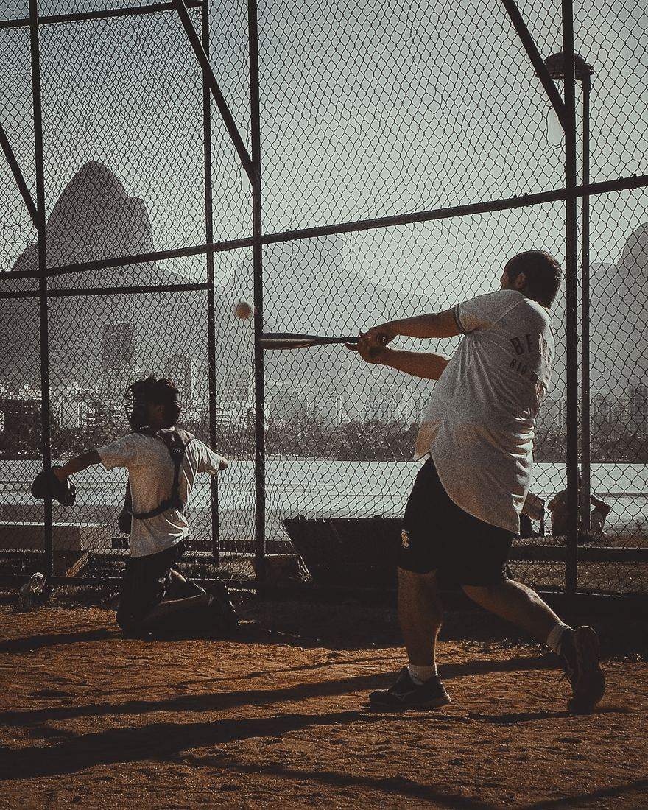
Rebatida na LagoaRio de Gente · 2018
Rebatida na Lagoa
Em frente à grade, o morro recorta o céu, a lagoa brilha ao fundo — mas aqui, agora, o mundo inteiro cabe na trajetória de uma bola.
O corpo gira, o bastão encontra o ponto certo, o catcher se estica no chão de terra batida, e por um segundo não existe trânsito, boleto ou preocupação: só o barulho seco da rebatida ecoando pela beira d’água.
No Rio, até um esporte importado ganha sotaque próprio quando ocupa a paisagem da cidade e vira encontro de amigos em tarde de sol.Descrição da imagem
Fotografia vertical de um jogo de beisebol em um campo de terra batida na beira da Lagoa Rodrigo de Freitas, no Rio de Janeiro. Em primeiro plano, à direita, um jogador de camiseta branca e bermuda escura gira o corpo no momento exato em que rebate a bola com o bastão, com uma perna esticada à frente e a outra atrás, levantando poeira. À esquerda, ajoelhado no chão, o catcher usa máscara e luva, esticando o braço para o lado, em posição de defesa. Ao fundo, uma cerca de arame cerca o campo; através dela, vê-se a lagoa, prédios e um morro emblemático recortando o céu claro. As sombras alongadas e o tom quente da imagem sugerem fim de tarde e transmitem a energia de um jogo amador em cenário urbano exuberante.
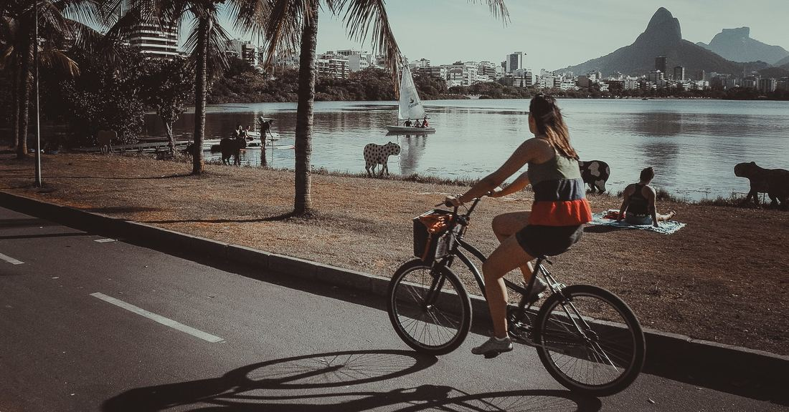
Entre Pedal e PaisagemRio de Gente · 2018
Entre Pedal e Paisagem
Enquanto a cidade ergue seus prédios do outro lado da lagoa, aqui o tempo corre em outro ritmo: o do pedal leve, da toalha estendida na grama, do barco que corta a água sem pressa.
Ela atravessa a ciclovia como quem costura esse cenário todo num único movimento — sombra alongada no asfalto, vento no rosto, o Cristo escondido atrás do morro mas presente em cada curva.
No Rio, às vezes a maior exuberância está justamente nisso: na simplicidade de seguir o dia de bicicleta, com um cartão-postal inteiro servindo de companhia.Descrição da imagem
Fotografia horizontal na ciclovia da Lagoa Rodrigo de Freitas, no Rio de Janeiro. Em primeiro plano, à direita, uma mulher de cabelo preso em rabo de cavalo pedala uma bicicleta preta, vestindo blusa colorida em faixas e short escuro; sua sombra se projeta comprida no asfalto. À esquerda, aparece parte da pista de ciclismo vazia, com marcações brancas no chão. Ao fundo, na área de grama entre a ciclovia e a água, um homem está sentado sobre uma canga, de frente para a lagoa, enquanto esculturas em forma de animais se espalham pelo gramado. Na água, um veleiro branco desliza, e atrás dele vê-se a faixa de prédios da cidade e os morros recortando o céu, com luz suave de fim de tarde. A cena transmite clima de lazer, movimento e contemplação em uma paisagem urbana exuberante.
- Luta e Calmaria
Rio de Gente · 2018
Luta e Calmaria
Enquanto os veleiros riscam a Lagoa em silêncio e os morros se empilham em camadas ao fundo, dois corpos treinam na beira d’água como se dançassem um combate antigo.
Mãos que se tocam, se desviam, se testam, numa coreografia de força e respeito, em contraste com a serenidade do cenário.
O Rio também é isso: a cidade que abriga, no mesmo enquadramento, a brisa leve sobre a água e a intensidade de quem escolhe o próprio corpo como território de foco e disciplina.Descrição da imagem
Fotografia vertical na orla da Lagoa Rodrigo de Freitas. Em primeiro plano, em contraluz, dois homens de cabeça raspada aparecem em silhueta, frente a frente, com os braços erguidos em posição de treino ou luta, sobre a faixa de terra e grama à beira da água. Ao fundo, a superfície da lagoa reflete a luz clara, pontilhada por diversos barquinhos e veleiros brancos. Atrás deles, veem-se prédios baixos e, mais distantes, grandes morros sobrepostos em tons de cinza esmaecido, formando camadas até o topo do enquadramento. A luz de fim de tarde alonga as sombras e reforça o contraste entre as figuras escuras e a paisagem suave e luminosa.
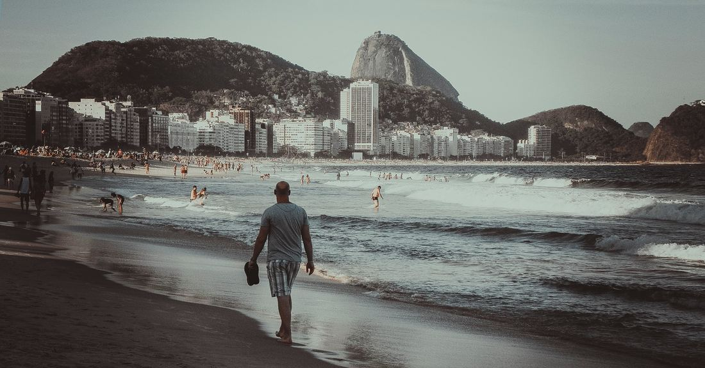
Mais Maravilhosa por Quem a HabitaRio de Gente · 2018
Mais Maravilhosa por Quem a Habita
O Rio parece cenário de filme: pedra rasgando o céu, prédios abraçados pelo morro, luz dourada batendo no mar de Copacabana como se fosse efeitos especiais.
Mas o que faz essa beleza surreal virar verdade é quem caminha descalço na areia, quem se joga na água gelada depois do trabalho, quem ri alto no calçadão e puxa conversa com desconhecido como se fosse de casa.
É a magia e o carisma do carioca — esse jeito de transformar um fim de tarde qualquer em encontro inesquecível — que deixam a Cidade Maravilhosa ainda mais maravilhosa.
Essa é a última foto da coleção, mas o Rio e quem vive nele vão muito além do que coube aqui: cada esquina, cada rosto e cada onda ainda guardam histórias que nenhuma lente consegue dar conta.Descrição da imagem
Fotografia horizontal da Praia de Copacabana ao entardecer. Em primeiro plano, um homem de costas caminha descalço na beira do mar, usando camiseta cinza e bermuda xadrez, segurando os chinelos na mão direita. À esquerda, a faixa de areia escura recebe muitos banhistas e pedestres; à direita, as ondas espumam em direção à praia. Ao fundo, a orla de prédios forma uma linha contínua aos pés de morros cobertos de vegetação, com o Pão de Açúcar se destacando em posição central. A luz baixa e difusa cria atmosfera nostálgica, misturando o movimento das pessoas com a imponência da paisagem carioca.


Bastidores
Atrás da câmera
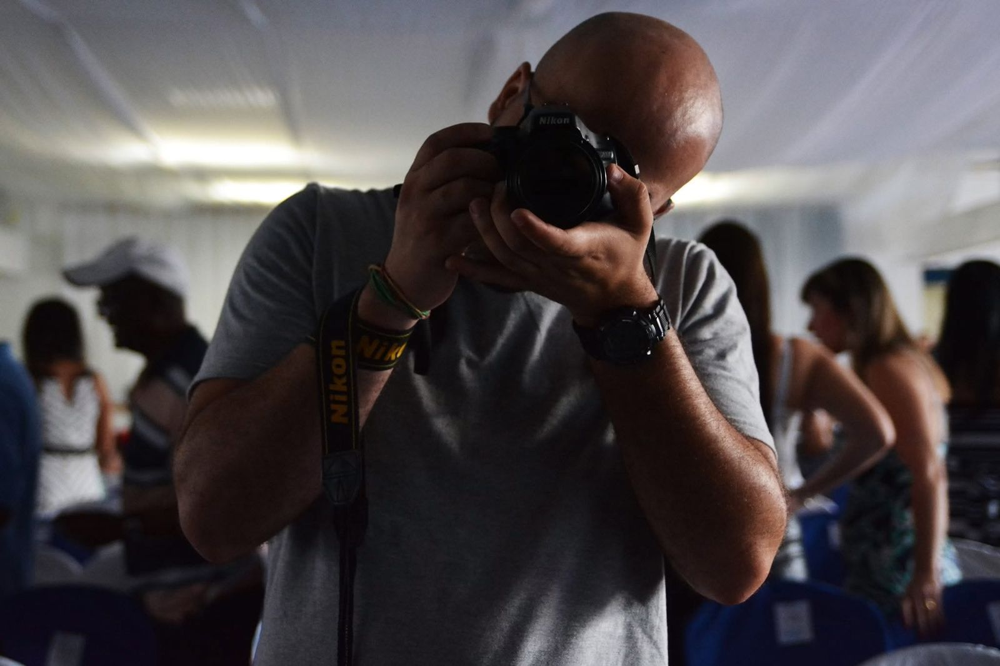
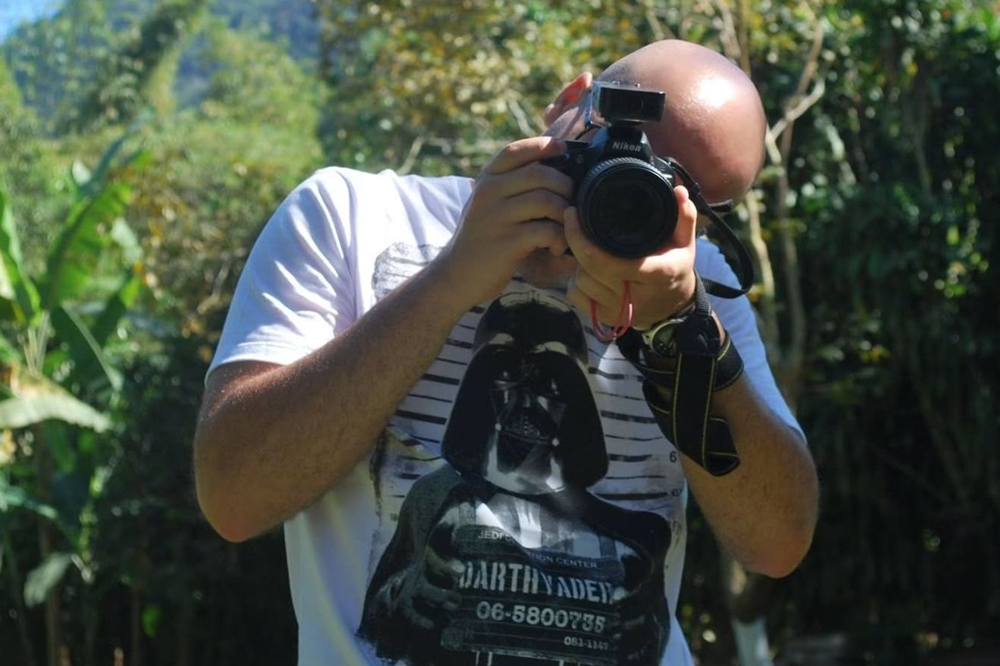
Perfil de fotografia, separado do @vejaogustavo.
Apareceu em alguma foto e prefere sair? Escreva para vejaogustavo@gmail.com e eu retiro.
Para licenciar ou adquirir uma foto, escreva para o mesmo e-mail.
Todas as imagens: © Gustavo Valentino. Reprodução somente com autorização (Lei nº 9.610/1998).